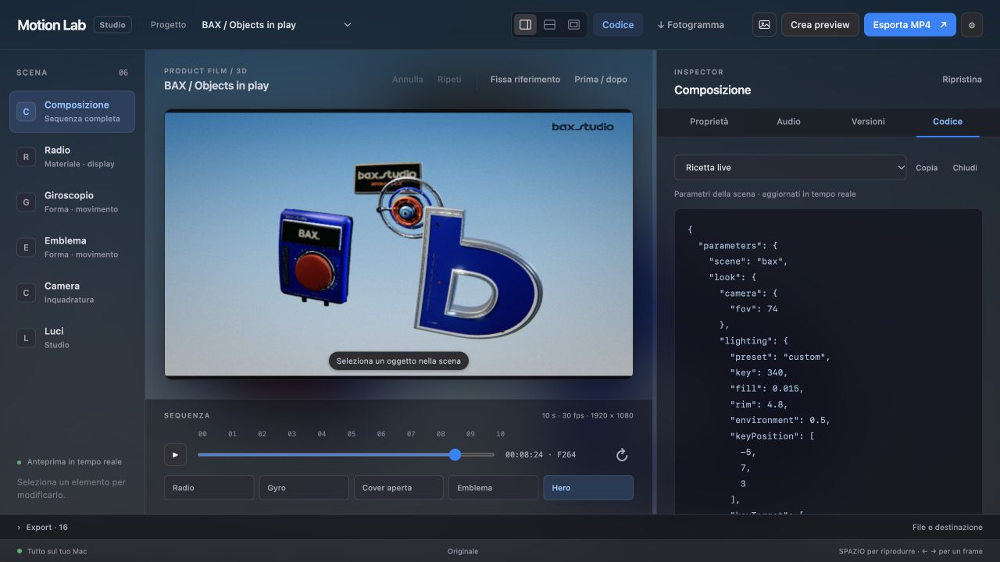

Make it yours.
Scene-specific controls for color, camera and lighting. The new product starter puts its reusable kit directly in your hands.
INDEPENDENT MOTION DESIGN · OPEN SOURCE
A personal project by Andrea Salvo.
Built for the details. Open for you to make your own.
 SELECTED WORK / 01DESIGNED & RENDERED IN MOTION LABPULSESound, shaped into motion.
SELECTED WORK / 01DESIGNED & RENDERED IN MOTION LABPULSESound, shaped into motion.THE STUDIO
Work with a coding agent to build the scene. Preview it here, adjust the available controls, and keep refining the same project.
Scene-specific controls for color, camera and lighting. The new product starter puts its reusable kit directly in your hands.
Adjust the camera and studio lighting. Compare with a reference and undo a change.
Expand the code panel to inspect the scene source or its live parameter recipe.

MADE IN MOTION LAB
Six explorations of form, rhythm and movement.
Watch the finished films. Open the source. Make something different.
Sound objects, tactile materials and cinematic movement in a rhythmic 3D studio.
RENDER RESEARCH / 01
Up close. Way beyond a normal lens. Ceramic, leather, rubber, brushed metal and a glowing subpixel display meet in a 114° macro study, against a black-to-blue gradient, with light bouncing between the surfaces.

Same model, surfaces, camera and lights. Plain raster on the left; path tracing on the right. No post effects. This compares two test renders, not the finished film.


A new detail pass on the existing PULSE model, with real grille openings, seam stitching, a subpixel display and layered finishes. The experimental adapter disables clearcoat in both views; the film materials stay intact. Available as an optional local still export.
Reproduce the render ↗THE WORK BEHIND THE FRAME
Motion Lab grew through repeated passes on geometry, materials, lighting and timing. The useful parts now live in a reusable product kit, ready for the next scene.
Rubber grips, matte housings, brushed metal and curved optics. Distinct surfaces, shaped by studio reflections.
Layered controls, open lens sleeves and real panel openings. Reuse components or start with a model from the films.
Camera travel, accelerating approaches and controlled recoil. Every pose remains editable at any point in time.
Open the product starter and adjust its materials, lights and lens. Build your next scene from the same kit.
BEFORE YOU START
The source code is free under the MIT license. Coding assistants and separately licensed music may have their own costs. Local rendering does not spend AI generation credits.
Preview scenes, use their available controls, save browser versions and download PNG frames or project recipes. Install the local app to manage project files and export full videos.
Use Codex or Claude to edit the scene code and its recipe. Motion Lab renders those instructions locally; the app itself does not generate a video from a text prompt.
The current setup is tested on macOS with Google Chrome and Node.js 22.12 or newer. It uses Three.js for 3D and FFmpeg for video export. Windows and Linux are not yet validated.
YOUR WORKSPACE, LOCALLY
Work with an agent on the scene and its recipe.
Refine in the studio. Render locally.
Tested on macOS · Node.js 22.12+ · Google Chrome
Internet required for the first installation.
git clone https://github.com/AndreXes03/motion-lab.git cd motion-lab npm ci npm run viewer
Your files and renders stay on your Mac.
Checks & supported setup ↗